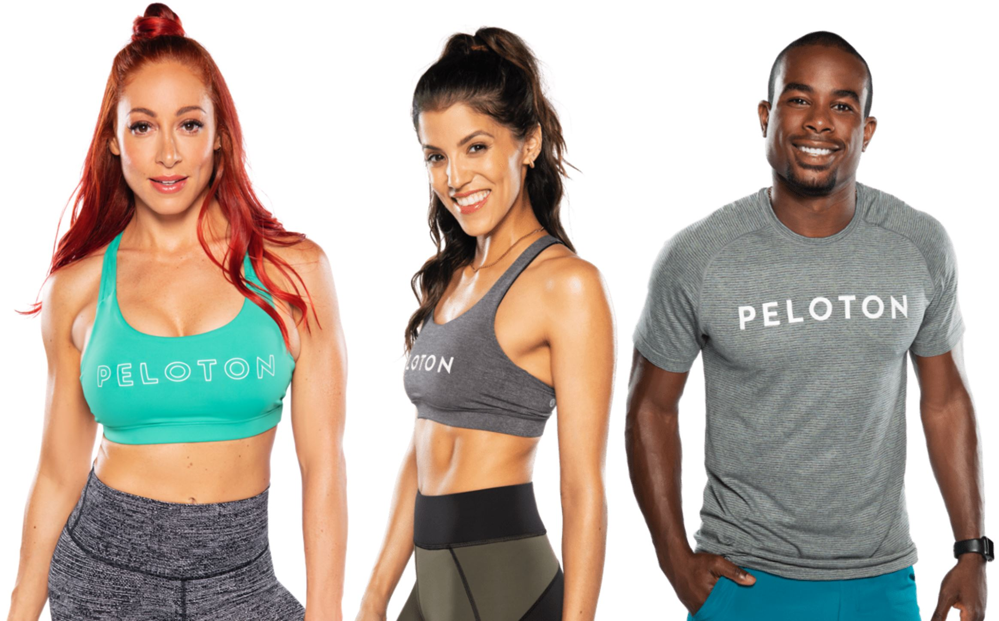

In 2018, my wife and I were fortunate enough to find a deeply discounted Peloton on an online garage sale. Since then, she’s been going hard and I have been trying to keep up when the weather is bad or injuries keep me from running.
Over the last few months, a few works projects have taught me a lot about purrr, functional programming, collaborative projects, and APIs.
In the next few Peloton blog posts, I hope to show a few things:
- How to access the Peloton API.
- The power of
purrrand functional programming. - That I am the superior Peloton rider… or maybe not.
This first post will focus on accessing the Peloton API.
The Peloton API
Thanks Ben Weiher for creating the pelotonR package. I was able to submit a couple pull requests that (I think) improved its capabilities. Thanks Ben for being a gracious repo owner and accepting these pull requests.
Oh, and while you are here, follow me on Peloton. My user name is DTDusty
Install pelotonR
First, to install the package, you can run the following code to download/install it from Ben’s repo.
devtools::install_github("bweiher/pelotonR")Load Libraries
Let’s fire up pelotonR and, as always, the tidyverse and take them for a spin.
library(pelotonR)
library(tidyverse)
library(lubridate)Connect To API
Use your Peloton email address and password.
peloton_auth(login = "your.email@domain.com", password = "cl3v3r_pa$$w0rd")After connecting to the API, you can get your info with the following function.
me <- get_my_info() For our own edification, here is a list of all the output columns alphabetized.
allow_marketing, birthday, block_explicit, block_prenatal, can_charge, contract_agreements, created_at, created_country, customized_heart_rate_zones, customized_max_heart_rate, cycling_ftp, cycling_ftp_source, cycling_ftp_workout_id, cycling_workout_ftp, default_heart_rate_zones, default_max_heart_rate, email, estimated_cycling_ftp, external_music_auth_list, facebook_access_token, facebook_id, first_name, gender, hardware_settings, has_active_device_subscription, has_active_digital_subscription, has_signed_waiver, height, id, image_url, instructor_id, is_complete_profile, is_demo, is_effort_score_enabled, is_external_beta_tester, is_fitbit_authenticated, is_internal_beta_tester, is_profile_private, is_provisional, is_strava_authenticated, last_name, last_workout_at, locale, location, member_groups, middle_initial, name, obfuscated_email, paired_devices, phone_number, quick_hits, referrals_made, total_followers, total_following, total_non_pedaling_metric_workouts, total_pedaling_metric_workouts, total_pending_followers, total_workouts, username, v1_referrals_made, weight, workout_counts
Explore API
Currently, the pelotonR package has a nice function for exploring your information. As with most APIs the data is stored in JSON format The function below extracts the data and unpacks some of the nested lists.
Here it is below:
my_workout_df <- get_all_workouts(userid = me$id, num_workouts = me$total_workouts, joins = "ride,ride.instructor", parse_dates = T)
my_workout_df ## # A tibble: 398 x 89
## created_at device_type end_time fitness_discipline
## <dttm> <chr> <dttm> <chr>
## 1 2021-06-20 20:59:24 home_bike_v1 2021-06-20 21:19:25 stretching
## 2 2021-06-20 20:48:58 home_bike_v1 2021-06-20 20:58:59 stretching
## 3 2021-03-24 20:06:30 home_bike_v1 2021-03-24 20:27:27 cycling
## 4 2021-03-24 19:58:42 home_bike_v1 2021-03-24 20:03:40 cycling
## 5 2021-03-17 20:41:26 home_bike_v1 2021-03-17 21:02:21 cycling
## 6 2021-03-17 20:31:24 home_bike_v1 2021-03-17 20:36:22 cycling
## 7 2021-03-08 20:24:45 home_bike_v1 2021-03-08 20:45:40 cycling
## 8 2021-03-08 20:16:04 home_bike_v1 2021-03-08 20:21:01 cycling
## 9 2021-03-05 20:40:23 home_bike_v1 2021-03-05 21:01:20 cycling
## 10 2021-03-05 20:32:06 home_bike_v1 2021-03-05 20:37:05 cycling
## # ... with 388 more rows, and 85 more variables: has_pedaling_metrics <lgl>,
## # has_leaderboard_metrics <lgl>, id <chr>,
## # is_total_work_personal_record <lgl>, metrics_type <chr>, name <chr>,
## # peloton_id <chr>, platform <chr>, start_time <dttm>, status <chr>,
## # timezone <chr>, title <chr>, total_work <dbl>, user_id <chr>,
## # workout_type <chr>, total_video_watch_time_seconds <int>,
## # total_video_buffering_seconds <int>,
## # v2_total_video_watch_time_seconds <dbl>,
## # v2_total_video_buffering_seconds <dbl>,
## # total_music_audio_play_seconds <chr>,
## # total_music_audio_buffer_seconds <chr>, ride <list>, created <dttm>,
## # device_time_created_at <dttm>, strava_id <chr>, fitbit_id <chr>,
## # effort_zones <chr>, ride_has_closed_captions <lgl>,
## # ride_content_provider <chr>, ride_content_format <chr>,
## # ride_description <chr>, ride_difficulty_rating_avg <dbl>,
## # ride_difficulty_rating_count <int>, ride_difficulty_level <chr>,
## # ride_duration <int>, ride_extra_images <chr>,
## # ride_fitness_discipline <chr>, ride_fitness_discipline_display_name <chr>,
## # ride_has_pedaling_metrics <lgl>, ride_home_peloton_id <chr>, ride_id <chr>,
## # ride_image_url <chr>, ride_instructor_id <chr>, ride_is_archived <lgl>,
## # ride_is_closed_caption_shown <lgl>, ride_is_explicit <lgl>,
## # ride_is_live_in_studio_only <lgl>, ride_language <chr>, ride_length <int>,
## # ride_live_stream_id <chr>, ride_live_stream_url <chr>, ride_location <chr>,
## # ride_metrics <list>, ride_origin_locale <chr>,
## # ride_original_air_time <dttm>, ride_overall_rating_avg <dbl>,
## # ride_overall_rating_count <int>, ride_pedaling_start_offset <int>,
## # ride_pedaling_end_offset <int>, ride_pedaling_duration <int>,
## # ride_rating <int>, ride_ride_type_id <chr>, ride_ride_type_ids <list>,
## # ride_sample_vod_stream_url <chr>, ride_scheduled_start_time <dttm>,
## # ride_series_id <chr>, ride_sold_out <lgl>, ride_studio_peloton_id <chr>,
## # ride_title <chr>, ride_total_ratings <int>,
## # ride_total_in_progress_workouts <int>, ride_total_workouts <int>,
## # ride_vod_stream_url <chr>, ride_vod_stream_id <chr>,
## # ride_class_type_ids <list>, ride_difficulty_estimate <dbl>,
## # ride_overall_estimate <dbl>, ride_availability <list>,
## # ride_is_dynamic_video_eligible <lgl>, ride_is_fixed_distance <lgl>,
## # ride_dynamic_video_recorded_speed_in_mph <dbl>, ride_distance <dbl>,
## # ride_distance_unit <chr>, ride_distance_display_value <chr>,
## # ride_instructor <list>You can see the function returns quite a bit of information - one row per workout.
Dig in deeper into the API
The Peloton API has a lot more information that you cannot yet access in the library. As I get more familiar with the API / library, I may do a few more pull requests. In the meantime, lets see what else we can find.
What we see in the my_workout dataframe above list element that contains the instructor ID.
my_workout_df %>%
select(ride_instructor) %>%
group_by(ride_instructor) %>%
group_split() %>%
purrr::map(~unnest(.x)) %>%
purrr::map(~slice(.x, 1)) %>%
purrr::map_dfr(~unnest(.x))## # A tibble: 33 x 1
## ride_instructor
## <chr>
## 1 561f95c405734d8488ed8dcc8980d599
## 2 1b79e462bd564b6ca5ec728f1a5c2af0
## 3 4904612965164231a37143805a387e40
## 4 048f0ce00edb4427b2dced6cbeb107fd
## 5 7f3de5e78bb44d8591a0f77f760478c3
## 6 05735e106f0747d2a112d32678be8afd
## 7 2e57092bee334c8c8dcb9fe16ba5308c
## 8 4672db841da0495caf4b8f9cda405512
## 9 c0a9505d8135412d824cf3c97406179b
## 10 f6f2d613dc344e4bbf6428cd34697820
## # ... with 23 more rowsWhile I was selective in what I extracted from this JSON, I do not see instructor name. Lets see what we can find if we dig into the API.
Access API
To find the instructor information, we need to use the correct instructor endpoint. Some API’s are not documented very well, so you have to get lucky sometimes to find these.
pull <- httr::GET(url = str_c("https://api.onepeloton.com/api/instructor?limit=1000&page=0"))
parsed <- jsonlite::fromJSON(httr::content(pull, "text", encoding = "UTF-8"), simplifyVector = FALSE)
pull## Response [https://api.onepeloton.com/api/instructor?limit=1000&page=0]
## Date: 2021-06-24 16:00
## Status: 200
## Content-Type: application/json
## Size: 190 kBStatus 200 means success!
This function below will pull out one instructor’s information. There is a LOT more information for each instructor – but I will only extract a few interesting headings.
instructor_function <- function(num = 2) {
tibble(
instructor_name = pluck(parsed$data, num, c("name")),
ride_instructor_id = pluck(parsed$data, num, c("id")),
ride_instructor_bio = pluck(parsed$data, num, c("bio")),
ride_instructor_background = list(pluck(parsed$data, num, c("fitness_disciplines")))
)
}
instructor_function(5)## # A tibble: 1 x 4
## instructor_name ride_instructor_id ride_instructor_bio ride_instructor_~
## <chr> <chr> <chr> <list>
## 1 Ally Love 731d7b7f6b414a4989~ "As a model, dancer, ce~ <list [1]>Lets get a look at how we can access the data of all the Peloton instructors.
instructor_df <-
1:parse_list_to_df(parsed,
parse_dates = T,
dictionary = list(numeric = c("v2_total_video_buffering_seconds", "ride_distance",
"v2_total_video_watch_time_seconds")))$total %>%
purrr::map_dfr(~ instructor_function(num = .x))
instructor_df## # A tibble: 41 x 4
## instructor_name ride_instructor_id ride_instructor_bio ride_instructor_~
## <chr> <chr> <chr> <list>
## 1 Aditi Shah b8c2734e18a7496fa~ "To Aditi, yoga goes b~ <list [2]>
## 2 Adrian Williams f962a2b1b34d424ca~ "Adrian is a powerhous~ <list [6]>
## 3 Anna Greenberg a8c56f162c964e939~ "When Anna first turne~ <list [2]>
## 4 Alex Toussaint 2e57092bee334c8c8~ "Alex Toussaint has a ~ <list [1]>
## 5 Ally Love 731d7b7f6b414a498~ "As a model, dancer, c~ <list [1]>
## 6 Andy Speer c9fa21c2004c4544a~ "Andy takes a techniqu~ <list [6]>
## 7 Becs Gentry 286fc17080d34406a~ "Becs joins Peloton fr~ <list [3]>
## 8 Ben Alldis 7f3de5e78bb44d859~ "Growing up, Ben was a~ <list [2]>
## 9 Bradley Rose 01f636dc54a145239~ "If there’s one thing ~ <list [1]>
## 10 Callie Gullicks~ 255c81782f7242c9a~ "Callie radiates sunsh~ <list [3]>
## # ... with 31 more rowsThere’s all the instructors. Now lets join them to our workout dataframe. You can see the additional columns of instructor information at the end of the dataframe.
my_workout_df <-
my_workout_df %>%
left_join(instructor_df)
my_workout_df %>%
select(created_at ,name, instructor_name) %>%
filter(!is.na(instructor_name)) %>%
slice_head(n = 5)## # A tibble: 5 x 3
## created_at name instructor_name
## <dttm> <chr> <chr>
## 1 2021-06-20 20:59:24 Stretching Workout Hannah Corbin
## 2 2021-06-20 20:48:58 Stretching Workout Jess Sims
## 3 2021-03-24 20:06:30 Cycling Workout Kendall Toole
## 4 2021-03-24 19:58:42 Cycling Workout Kendall Toole
## 5 2021-03-17 20:41:26 Cycling Workout Jess KingVisualize
In my next plot post, I’ll do more to explore the data in the API. In the meantime, lets take a look at which instructors I seem to prefer!
my_workout_df %>%
filter(created_at <= ymd(20200809)) %>%
filter(fitness_discipline == "cycling") %>%
count(instructor_name,fitness_discipline) %>%
filter(!is.na(instructor_name)) %>%
mutate(instructor_name = fct_lump_min(instructor_name,5,w = n)) %>%
group_by(instructor_name) %>% summarise(n = sum(n),.groups = "drop_last") %>% arrange(-n) %>%
ggplot(aes(x=fct_reorder(instructor_name,n),y=n,fill = instructor_name)) +
geom_col(position = "dodge") +
scale_fill_manual(values = wesanderson::wes_palette("Rushmore1", n = 8,type = "continuous")) +
coord_flip() +
labs(title = "My Favorite Instructors", x = "", y = "Rides") +
theme(legend.position = "none")
